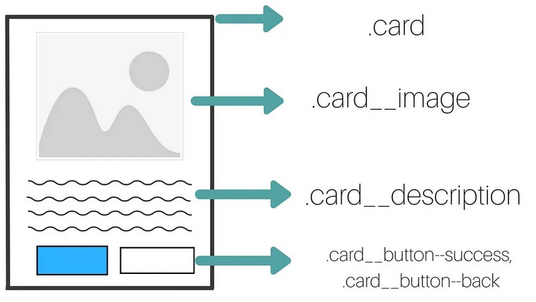

BEM — Conociendo la metodología
Qué es BEM
La metodología Block, Element, Modifier (comúnmente conocida como BEM) es una convención de nomenclatura popular para clases en HTML y CSS. Desarrollado por el equipo de Yandex, su objetivo es ayudar a los desarrolladores a comprender mejor la relación entre HTML y CSS en un proyecto determinado.
Identificando Bloque, Elemento y Modificador
Bloque: Contenedor o etiqueta que dentro de si tiene otros elementos. Elemento: Etiqueta HTML que forma parte de un bloque. Modificador: Característica que permite diferencia elementos dentro de un bloque. Se puede apreciar que un bloque puede ser un elemento de un bloque superior y viceversa.
Por qué usar BEM?
Si queremos crear un nuevo estilo de un componente, podemos ver fácilmente qué modificadores y elementos secundarios ya existen. Incluso podríamos darnos cuenta de que no necesitamos escribir ningún CSS en primer lugar porque hay un modificador preexistente que hace lo que necesitamos. Si estamos leyendo el marcado (archivo html) en lugar de CSS, deberíamos poder hacernos una idea rápida de qué elemento depende de otro.Los diseñadores y desarrolladores pueden nombrar los componentes de forma coherente para facilitar la comunicación entre los miembros del equipo. En otras palabras, BEM brinda a todos en un proyecto una sintaxis declarativa que pueden compartir para que estén en la misma página.
